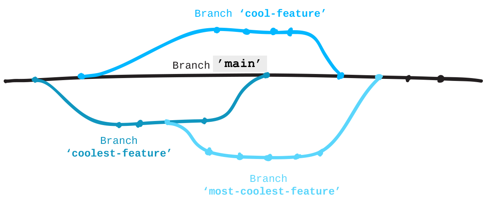

Create a new branch on your fork for your contribution.
Git repositories use branches to isolate work when needed. It's common practice when working on a project or with others on a project to create a branch to keep your changes in until they are ready. This way you can do your work while the main, commonly named 'master', branch stays stable. When your branch is ready, you merge it back into 'master'.
For a great visualization on how branches work in a project, see this GitHub Guide: guides.github.com/overviews/flow
GitHub will automatically serve and host static website files in branches named 'gh-pages'. Since the project you forked creates a website, its main branch is 'gh-pages' instead of 'master'. All sites like this can be found using this pattern for the URL:
http://githubusername.github.io/repositoryname
When you create a branch, Git copies everything from the current branch you're on and places it in the branch you've requested.
Type git status to see what branch you're currently on (it
should be 'gh-pages').
Create a branch and name it "add-<username>", where 'username' is your username. For instance, "add-jlord". Branches are case-sensitive so name your branch exactly the way your GitHub name appears.
$ git branch <BRANCHNAME>
Now you have a branch with a new name identical to 'gh-pages'.
To go into that branch and work on it, similar to using cd to
change directory in terminal, you checkout a branch. Go onto your new branch:
$ git checkout <BRANCHNAME>
Back to the text editor:
Go through the steps for checking in a project:
$ git status
$ git add <FILENAME>
$ git commit -m "<commit message>"
Now push your update to your fork on GitHub:
$ git push origin <BRANCHNAME>
git-it verifygit-it
The file you create should inside the existing 'contributors' folder in the Patchwork repository. If you put it somewhere else, simply use Finder or Windows Explorer to move your file into the folder. You can check git status again and you'll find it sees your changes. Stage and then commit "all" (-A) of these changes (additions and deletions) with the commands below.
$ git add -A
$ git commit -m "move file into contributors folder"
The branch name should match your user name exactly. To change your branch name:
$ git branch -M <NEWBRANCHNAME>
When you've made your updates, verify again!
$ git checkout -b <BRANCHNAME>$ git branch <BRANCHNAME>$ git checkout <BRANCHNAME>$ git branch$ git branch -m <NEWBRANCHNAME>$ git status